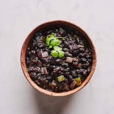

Frijoles negros

Cuban black beans (not my photo)
Description
Cuban black beans is a traditional recipe that has been cooked for years on a pot for a copious amount of time. In today's day and age, it's hard to carve out the time to spend hours upon hours cooking a pot of
beans on the stove. That's why this recipe involves the use of a pressure to greatly speed up the process. What once was a 2 to 3 hour long simmer has now become a 35 pressure cook (note: this does not include the
time required for the pot to pressurize and depressurize). I'm trying to steer away from the tendency of food blogs to go on and on about the recipe without actually giving it to you so let's get right into it.
Ingredients
- 1 lb black beans
- 1 yellow onion, peeled and chopped
- 1 bell pepper (color is up to you), chopped
- 5 cloves of garlic (or more), peeled and chopped
- olive oil
- cumin
- oregano
- black pepper
- salt
- garlic powder
- onion powder
- tomato paste
- 5 cups of water
Steps
- Start by pressing the Saute button on your InstantPot and setting it to medium heat
- Once it comes up to temp, pour enough olive oil into the pot to cover the bottom and toss in the onions and bell peppers until they start to turn golden, about 5-8 minutes.
- Next, toss in the garlic until golden, about 30 second to a minute, and then add the tomato paste.
- Stir everything together and then add the cumin, oregano, onion powder, garlic powder, and black pepper until it feels right. You can also add about a tbsp or less of salt for right now.
- Pour in the water and add the beans. Stir well and make sure to scrape up any fond that built up on the bottom from the veggies.
- Put your lid on the InstantPot and set to Pressure Cook on High for 35 min.
- Once it finishes and depressurizes, salt to taste and then enjoy!
Note: It'll taste even better after getting to sit in the fridge for a day or two.